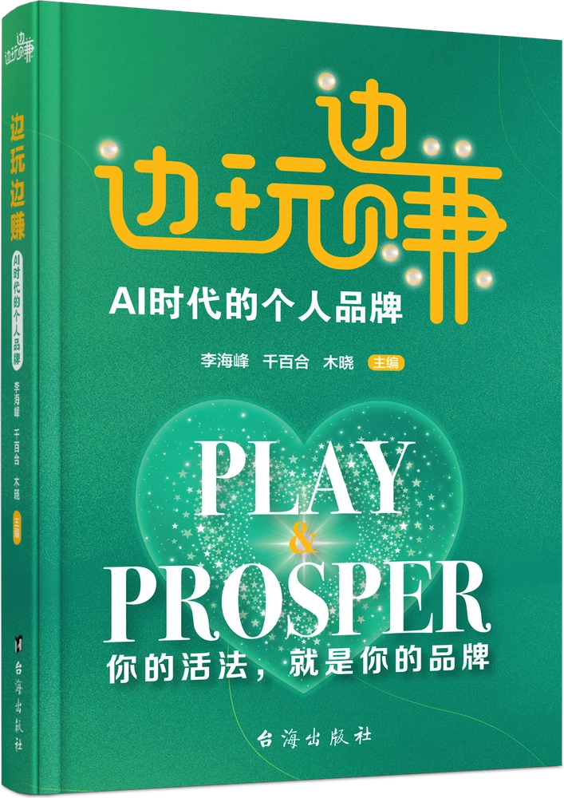

书 4 · 第 11 篇万事可成
一个名字，用大半辈子把它活成现实
24 岁生日那天，我在丽江，我自己的咖啡馆里。
晚秋的风有点凉。木板门开着，旁边有河水潺潺流动。一束光从门缝透进来，落在原木色的桌上，暖洋洋的橘黄。音箱里放着巴赫的无伴奏大提琴组曲，手边是一杯普洱茶。
我在想一件事。我想改姓，跟着妈妈姓「万」。我觉得这个字特别棒，可以有无数可能。我甚至开玩笑说想叫「万岁」。我妈笑着说，你承担不起。
没想多久，大概半个小时。我在纸上写下两个字：万可。
原来我叫田方，妹妹叫田圆——没有规矩，不成方圆。可我不要做规矩里的人。我要万事皆可，万事可成。
这个名字不是包装，是一个决心——我这辈子，不想活在别人划好的格子里。
一种，是按别人写好的剧本走。另一种，是自己拿起笔，写自己的剧本。选了，就不回头。
后面的转山、上海、大理，在书 4 里。
 书 3 · 第 34 篇
书 3 · 第 34 篇 万可「万事可成」养成系创始人
万可「万事可成」养成系创始人